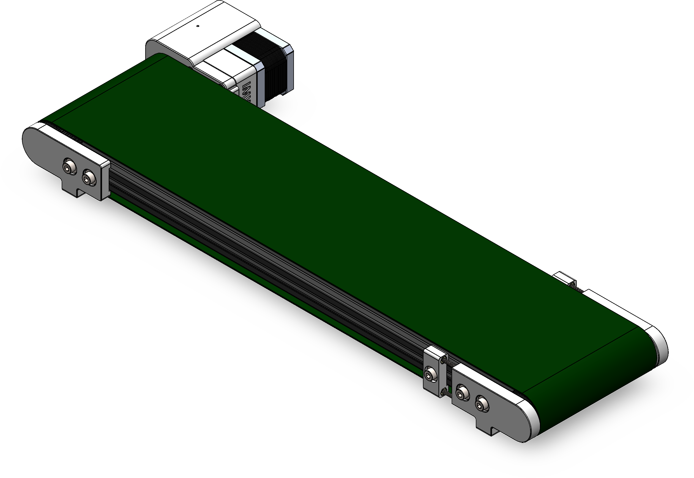
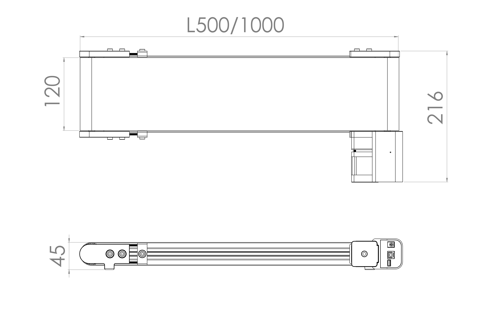

Short Conveyor Specifications¶
Introduction¶

The Short Conveyor is mainly used in small-scale projects and experimental setups involving Delta X 1 and Delta X 2 robots. Its compact design makes it easy to deploy and integrate into various systems.
System Components¶
The Short Conveyor integrates a range of essential components tailored to its specific design:
| Component | Material |
|---|---|
| Frame | 2020 Alumium profiles |
| Rollers | 3D printed |
| Motor | NEMA 17 Stepper Motor |
| Gearbox | 1:3 GT2 Belt Drive gearbox |
| Belt | PVC |
| Control Board | ATmega328P MCU |
| Power Supply | 12VDC/3A |
Dimensions¶

Conveyor Specifications¶
| Parameter | Specifications |
|---|---|
| Length | 500/1000 mm |
| Width | 120 mm |
| Motor | NEMA 17 Stepper Motor |
| Speed Adjustment | G-code / Potentiometer |
| Frame Material | 2020 Aluminum |
Conveyor Features¶
| Feature | Description |
|---|---|
| Max Speed | 200 mm/s |
| Positioning Accuracy | ±0.2 mm |
| Power Supply | 12VDC/3A |
Control Options¶
The Short Conveyor offers flexible control methods:
- G-Code Control: Use G-Code commands for precise speed adjustments.
- Variable Speed Control: Adjust conveyor speed manually using a potentiometer.
Note
See the Short Conveyor G-code reference for serial setup, control modes, and commands M310–M313.
Applications¶
The Short Conveyor is exceptionally well-suited for diverse applications, including:
- Experimental projects
- Small-scale lab endeavors
- Integration with robotic arms such as delta robots
Contact Us¶
- Store: https://deltaxstore.com
- Website: https://www.deltaxrobot.com
- Email: deltaxrobot@gmail.com
- Phone: +84 38 875 2005